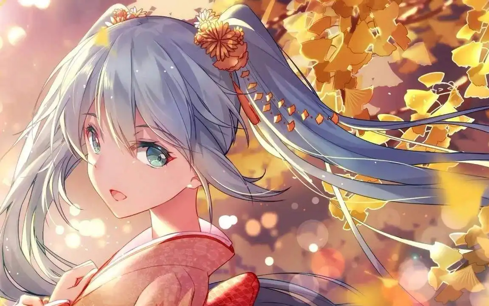

主页
百度词条
基本信息
电脑配置
姓名由来
音乐作品
演唱会时间轴
演唱会视频
2021 MIKU WITH YOU未来有你
2016 Magical Mirai魔法未来
代表音乐作品
初音ミク ベスト~impacts~
初音Miku BEST~memories~
初音亚种
四季初音
春初音/樱初音
夏初音/海初音
秋初音/枫初音
冬初音/雪初音
杂音未来
钢音未来
同人创作
美图速览
舞蹈视频
春初音
原名为樱未来（桜ミク），属于官方翻译， 中文VOCALOID圈常用版本为“樱初音”“樱MIKU”， 属于初音未来的二次创作造型。造型与本来的初音未来不同在于， 整体颜色以粉色和白色为基调，并加以樱花的点缀， 因为樱花也是日本的春季代表性花卉，所以也有”春初音“的别称。
夏初音
夏初音也称海初音，是四季初音中代表夏天的一名角色。

秋初音
枫初音(秋初音)，是初音未来的二次创作后诞生的角色。以秋天的枫叶为形象的初音未来。 秋ミク正确翻译应该是秋未来，不过华语圈较常用名字为秋初音。 因为秋初音身上有枫叶的图案，所以又称为红叶ミク，即枫初音。 “秋初音”的头发与衣服以红色和白色为主色调，头发有枫叶图案。
冬初音
雪未来为“雪ミク”（日文）的官方中文翻译名， 是Crypton旗下虚拟歌手初音未来的二次创作系列造型， 民间有时称其为“雪初音”或“雪MIKU”。 自2010年被确立为日本北海道札幌冰雪节的应援角色； 自2012年起，每年会以网络征集投票的形式决定新的雪未来人物形象。
copyright@rabbitx 2022